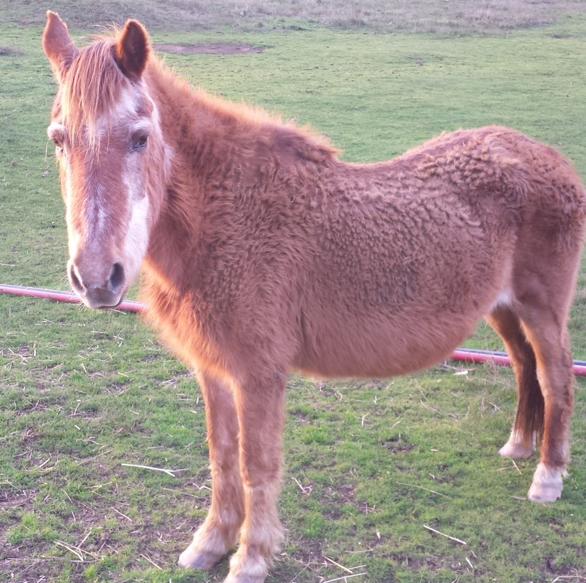

John Henry and His Friends
Luna and John Henry enjoyed each other's company.

Luna
"by Sheryl Davis"
Sometimes, John and Fritz shared a bucket of apples.
Fritz the Pony Horse
"by Bright Davis"
One day, Baby Deer wandered into John's meadow.
Baby and John talked awhile, and John told him where he could find Mother Deer.
John's Special Friend, Baby Deer
"by Henry F. Davis"
John and His Neighbors
See where John Henry grew up
copyright Sheryl Hott October 2016